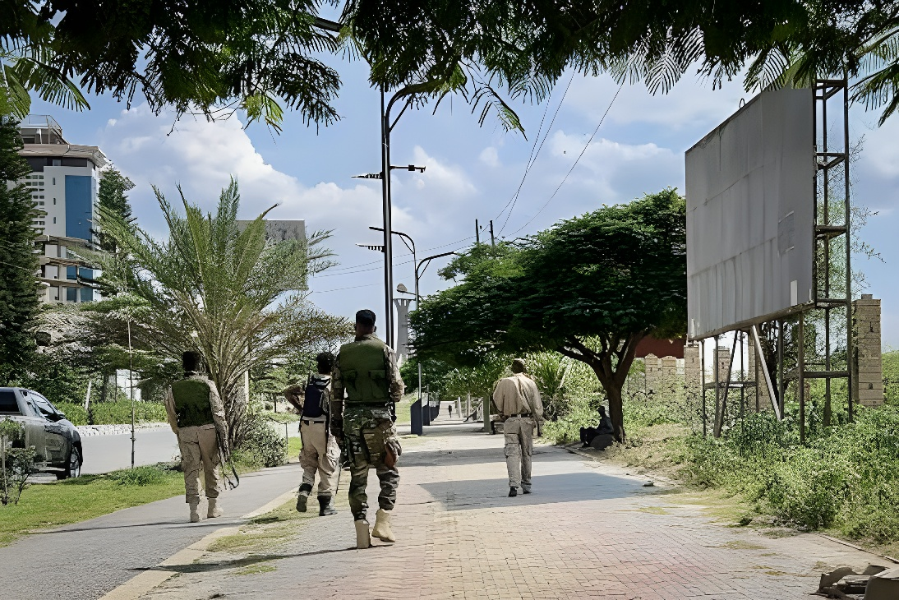

Mercredi 23 septembre 2026, les forces tigréennes du Front de libération du peuple du Tigré (TPLF), qui dirige de fait la région, ont pris le contrôle des aéroports de Mekele, d'Aksoum et de Shire, tandis que des combats les opposaient à l'armée fédérale dans l'Afar voisin. Ethiopian Airlines a suspendu ses vols vers les trois villes, et l'ONU, l'Union africaine et l'Union européenne réclament une désescalade immédiate. Jeudi 24 septembre, l'armée fédérale affirme avoir repoussé l'offensive, sans qu'aucune source indépendante puisse le confirmer.
Selon l'AFP, une employée de l'aéroport Alula Aba Nega de Mekele, capitale régionale, a été informée dans la matinée du mercredi 23 septembre par son supérieur que les Forces de défense du Tigré (TDF) avaient pris le contrôle de la plateforme, normalement gardée par quelques soldats fédéraux, l'une des rares présences visibles des autorités fédérales au Tigré. Une source sécuritaire étrangère a confirmé cette prise de contrôle. L'ONG ACLED, spécialisée dans le suivi des conflits, confirme que les forces tigréennes tiennent aussi les aéroports d'Aksoum et de Shire, et l'Union africaine évoque en outre la détention de personnels fédéraux.
Ethiopian Airlines, seule compagnie à assurer des vols intérieurs en Éthiopie, a suspendu mercredi ses liaisons avec les trois villes en raison de la situation au Tigré, et a annoncé que la date de reprise serait communiquée ultérieurement. Getachew Reda, conseiller du Premier ministre Abiy Ahmed, a dénoncé sur X une offensive du TPLF contre les positions gouvernementales dans l'Afar et l'Amhara, ainsi que la prise des aéroports fédéraux du Tigré.
Sept groupes hostiles au pouvoir fédéral, dont le TPLF, annoncent leur alliance au sein de l'Alliance des forces populaires éthiopiennes pour la survie, qui entend renverser le gouvernement d'Abiy Ahmed.
Les autorités du Tigré dénoncent des bombardements fédéraux menés avec des avions, des drones et de l'artillerie.
Les forces tigréennes prennent les aéroports de Mekele, d'Aksoum et de Shire ; des combats sont signalés dans l'Afar, près d'Abala et d'Erebti. Ethiopian Airlines suspend ses vols et l'UE comme l'UA appellent à la désescalade.
L'armée fédérale affirme avoir repoussé l'offensive et revendique 272 rebelles tués et 260 blessés ; l'AFP n'a pas pu vérifier ces chiffres de source indépendante.
Pour Addis-Abeba, c'est le TPLF qui a lancé une offensive d'ampleur. Les autorités régionales du Tigré affirment au contraire faire face à une invasion fédérale et disent avoir ordonné aux TDF de mener une bataille défensive. Le vice-président du TPLF, Amanuel Assefa, a assuré que des forces terrestres avaient attaqué le Tigré depuis le sud et l'est de la région.
« Je ne vois pas de possibilité de désescalade actuellement. »
— Amanuel Assefa, vice-président du TPLF, à l'AFP, 23 septembre 2026Signé le 2 novembre 2022, l'accord de Pretoria avait mis fin à deux ans de guerre entre le gouvernement fédéral d'Abiy Ahmed et le TPLF, qui a dirigé l'Éthiopie pendant près de trois décennies avant d'être marginalisé lorsque Abiy Ahmed a pris la tête de l'exécutif fédéral en 2018. Ce conflit, l'un des plus meurtriers au monde ces dernières années, a fait au moins 600 000 morts selon une estimation de l'Union africaine, et a déplacé plus d'un million des six millions d'habitants du Tigré.
Les tensions ont resurgi ces derniers mois : le TPLF n'est plus autorisé en Éthiopie depuis 2025 et Addis-Abeba l'accuse de gouverner illégitimement le Tigré. Les deux camps ont massé des troupes de part et d'autre de la frontière régionale, des combats les ont déjà opposés début 2026 et des drones éthiopiens ont visé une dizaine de fois les forces tigréennes depuis début août.
L'Union européenne et l'Union africaine, marraine de l'accord de Pretoria, ont réclamé en termes identiques une désescalade immédiate, Bruxelles insistant sur le respect du droit humanitaire international. Le secrétaire général de l'ONU, António Guterres, a demandé la plus grande retenue, la protection des civils et un accès humanitaire sans entrave. Le président de la Commission de l'UA, Mahmoud Ali Youssouf, juge la prise des aéroports incompatible avec les obligations de l'accord et appelle à la reprise sans délai de pourparlers directs, en demandant à l'ancien président nigérian Olusegun Obasanjo, haut représentant de l'UA pour la Corne de l'Afrique, d'engager les parties. Côté américain, l'ambassadeur Ervin Massinga a imputé l'offensive à la direction du TPLF et Washington indique disposer des moyens de sanctionner d'autres dirigeants.
| Repère | Chiffre | Statut |
|---|---|---|
| Aéroports contrôlés par les TDF | 3 (Mekele, Aksoum, Shire) | Confirmé (ACLED) |
| Accord de Pretoria | 2 novembre 2022 | Confirmé |
| Morts de la guerre 2020-2022 | ≥ 600 000 | Estimation UA |
| Déplacés au Tigré | > 1 million | Estimation (AFP) |
| Membres de l'Alliance pour la survie | 7 groupes | Annoncé (20 sept.) |
| Rebelles tués selon l'armée (24 sept.) | 272 tués, 260 blessés | Non vérifié |
En prenant les trois aéroports, les forces tigréennes ne coupent pas seulement les liaisons aériennes avec la région : elles neutralisent l'une des rares traces visibles de l'autorité fédérale au Tigré et placent l'accord de Pretoria, déjà fragilisé, face à son épreuve la plus sévère depuis 2022. L'issue reste incertaine : chaque camp accuse l'autre d'avoir déclenché les hostilités et les bilans avancés sont invérifiables. Selon ACLED, aucun des groupes alliés ne semble en mesure de menacer Addis-Abeba, mais une série d'insurrections simultanées pourrait user une armée fédérale déjà très sollicitée. Le risque dépasse aussi les frontières éthiopiennes : l'International Crisis Group redoute que les accusations visant l'Érythrée ne déclenchent un conflit régional, alors que les relations d'Addis-Abeba avec l'armée soudanaise se dégradent.